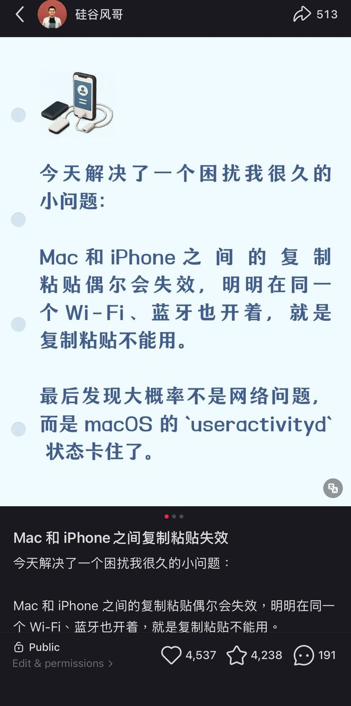

安装到 Mac
下载 DMG，把 App 拖入 Applications。首次打开按下方教程确认，然后在菜单栏找到笑脸剪贴板。
iPhone 上刚复制，Mac 却粘贴不出来？
Fix Clipboard 帮你一键重置共享服务，
再试一次跨设备复制粘贴。
macOS 13+ · Apple Silicon / Intel · 全部功能免费
当前版本未公证，首次打开需额外确认。先看打开方法
重置 Mac 端共享服务，再从另一台设备复制。
产品界面示意，操作请在 Mac App 中完成

小红书原帖 · 当时的小红书原帖反馈 →我也遇到过这个问题：手机上已经复制好了，切到 Mac，却怎么也粘贴不过来。原本几秒钟就该完成的事，变成了反复确认蓝牙、Wi-Fi 和接力有没有打开。
后来我把经历发到小红书，才发现不少人也在为同一件事烦恼。有人手机可以复制，Mac 接不到；也有人提到，问题常出现在 VPN 或网络切换之后。评论里的共鸣，让我想把解决过程做得更省事一点。
于是有了 Fix Clipboard。先把手动重置做成一个按钮，再加上本机诊断、网络变化和开盖唤醒后的自动处理。希望下次遇到时，你能少折腾几步，继续做原来的事。
它能尝试重置 Mac 端共享服务，解决不了所有原因。如果 VPN 禁止本地通信，仍然需要调整 VPN 设置。Apple 的说明也提醒了这一点。
无需账号、付费或授权码，关注也不是使用条件。工具不会读取你的剪贴板内容。
下载 DMG，把 App 拖入 Applications。首次打开按下方教程确认，然后在菜单栏找到笑脸剪贴板。
工具重置当前用户的共享服务。等待执行结束；过程中接力可能短暂中断。
在 iPhone 或 iPad 上重新复制一段文字，再到 Mac 粘贴，也试试反方向。执行完成不等于已经确认跨设备恢复。
我是 Louis。这个工具来自我自己的困扰，也因为小红书上大家的反馈继续改进。如果它对你有帮助，欢迎继续看看我在做什么。
从 Mac / iPhone 小问题，到 AI 工具怎么用、一个需求怎么变成产品。点进原帖，点击作者头像就能关注。
打开小红书原帖聊 AI 做产品、工作中的自动化，以及判断一个想法值不值得做的经验。
微信扫一扫关注公众号。无需加私人微信、入群或发送个人信息。
关注完全自愿。下载、自动修复和其他功能都不会检查你是否关注。
我暂时没有加入付费 Apple Developer Program。当前 App 没有 Developer ID 签名，也未经过 Apple 公证，所以 macOS 可能阻止首次打开。这类身份验证提示不等于检测到了恶意软件，但仍需你核对下载来源。
Fix Clipboard 的打开受到阻止。
位置示意，不同 macOS 版本的提示文字可能不同
工具做的事可以说清楚，也可以从源码核对。
启用本机剪贴板共享配置，重启当前用户的共享服务。免费自动修复在网络变化或唤醒后执行相同动作。
不读取、保存或上传剪贴板内容，不访问个人文件，没有遥测。诊断只提取必要的本机状态，不上传诊断信息。
不生成安装身份、不访问授权钥匙串，也不验证关注状态。关注入口由你主动打开，不影响任何功能。
不用。Fix Clipboard 运行在 Mac 上。两台设备仍需使用同一 Apple 账户，并开启 Wi-Fi、蓝牙和接力，保持在附近。它不能在只有 iPhone 和 iPad 的场景里重置手机服务。
VPN 不是通用剪贴板的必要条件。绿色表示没有检测到已连接的系统 VPN；橙色提示检查 Local Network Sharing / Allow LAN。这个检查可能遗漏第三方代理或其他设备上的 VPN，不能证明所有网络条件正常。
不能。它重置的是 Mac 端共享服务，无法确认服务内部是否卡住，也无法排除账户、设备距离、VPN 路由等问题。可以先尝试手动修复，再按需开启免费的自动修复。
不会读取、保存或上传剪贴板内容，也没有使用行为追踪。免费版不读取授权钥匙串，不调用支付或授权 API。完整隐私说明
不需要。现在全部功能免费，关注只是自愿支持作者的方式。旧版用户退出 App 后安装免费版即可，不需输入旧授权码。免费版不访问或删除旧授权钥匙串，已有自动修复设置保留。旧订单问题可通过原购买渠道联系作者。
当前发布为 v1.6.0-rc.1，功能和安装包经过自动化测试，但测试不能代替所有设备组合的实际验证。它尚未公证；Intel、较旧 macOS 和不同设备间的真实效果仍可能有差异。查看版本说明。
手动与自动修复全部免费。遇到问题，可以在 GitHub 反馈。